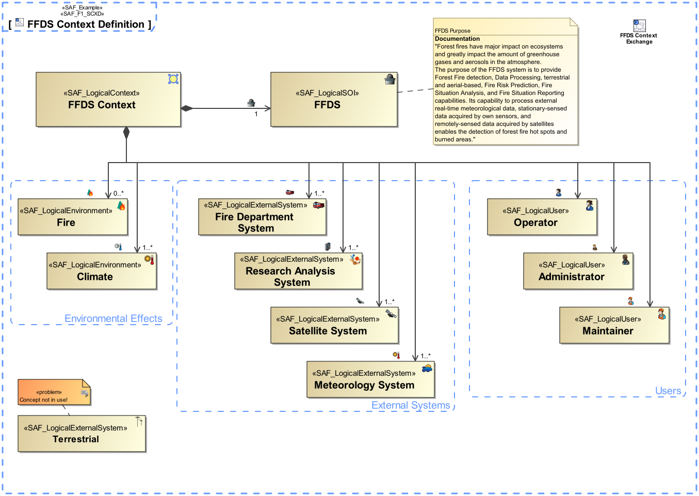
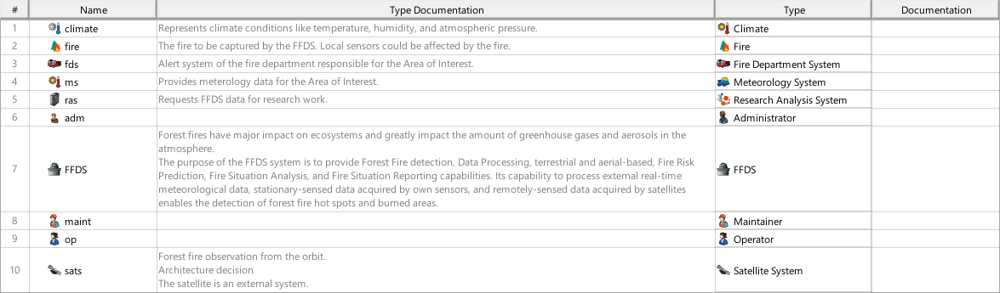
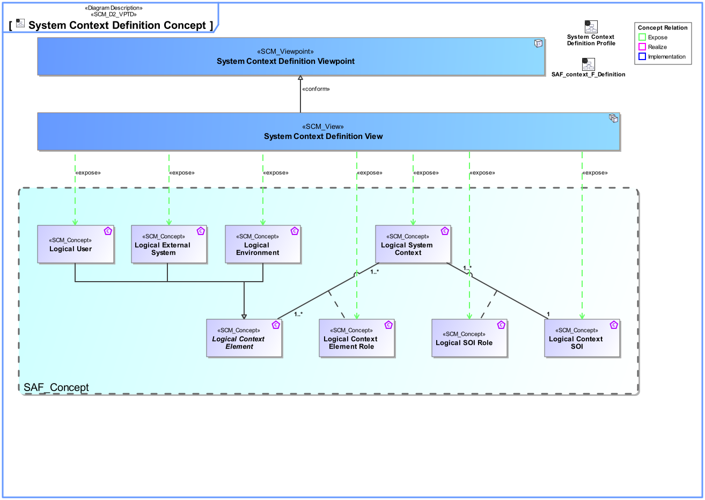
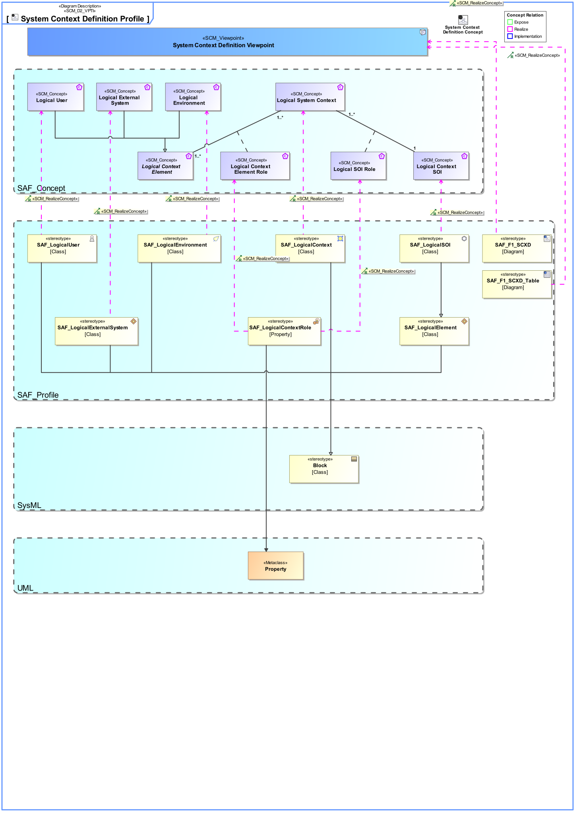

F1_SCXD System Context Definition Viewpoint
| Domain | Aspect | Maturity |
|---|---|---|
| Functional | Context & Exchange |


The System Context Definition Viewpoint defines how the SOI is embedded in its environment, i.e., where the boundary of the SOI is and who the external entities are the SOI interacts with (e.g., users, other external systems, environmental conditions, etc.). In addition, the System Context Definition Viewpoint serves as architecture concept to demonstrate how the architecture description defined in the Operational Context Definition Viewpoint is realized.
The System Context Definition Viewpoint supports the “prepare for system requirement definition” activity included in the “System Requirements Definition Process” activities of the INCOSE SYSTEMS ENGINEERING HANDBOOK 2023 [§2.3.5.3] and contributes to the artifact “System Requirements Definition Report”.
A block definition diagram (BDD) featuring the following elements
A tabular format listing context roles, context elements, and respective descriptions.
The following Stereotypes / Model Elements are used in the Viewpoint:
The Diagram shows the concepts exposed by the viewpoint, and related concepts if necessary.

| Concept | Documentation |
|---|---|
| Logical Context Element Role | Specifies the fact that a Logical Context Element exists in a given Logical System Context. |
| Logical Context SOI | Represents the Logical SOI in the System Context on Logical Level. |
| Logical Environment | A Logical Environment in the Logical Domain, outside the SOI scope, interacting with the SOI. E.g., air, dirt, sun, road. |
| Logical External System | A Logical External System in the Logical Domain, outside the SOI scope, interacting with the SOI. E.g., power grid, mobile network, fresh water system (in a house). |
| Logical SOI Role | Specifies the fact that a Logical Context SOI exists in a given Logical System Context. |
| Logical System Context | Specifies the fact that a System Context for a System of Interest is defined on Logical Level. |
| Logical User | The Logical User is the representation for a human in the Logical Domain, outside the SOI scope, interacting with the SOI. |
The Diagram shows the implementation of exposed concepts.
